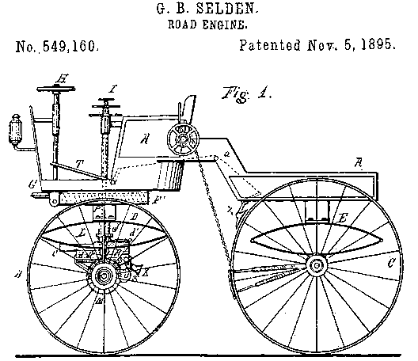

In the early days of cars, there were patent lawsuits sent between the lawyers, on horseback of course:

George Selden, the man who patented the car in 1895, didn't sell one until 14 years later. Was he just a squatter on this idea? The magic of the early car was the internal combustion engine, which Selden did not invent, and which required only the science of fire, something man exploited long before he understood it.
I believe research will show that 99% of software patents today are natural extensions of an existing idea. Even for the few truly unique ideas, it is probably better that the concept be widely available and used by many rather than guarded and stifled by a few.
If someone invents the software equivalent of an idea like E=mc2, do we really want just one entity to “own” that idea? Would Einstein want that? Anyone who supports software patents should hold up a good one and explain how it is actually unique and yet an idea that only one company should own.
If we outlawed software patents, the pace of progress in software would increase, the squatters and their lawyers would disappear, legal uncertainties surrounding software technology would decrease, and there would still be many other motivations to write software. In fact, many of the hassles in computing, like playing MP3s and DVDs, exist because of patent issues. As of 2005, the U.S. Patent and Trademark Office has granted 265,000 software patents, a very large minefield.
There is a lawsuit known as In re Bilski that is now before the Supreme Court (oral arguments on November 9, 2009) and which has the possibility to outlaw software patents. The details of the lawsuit are tedious — but the case has epic implications.